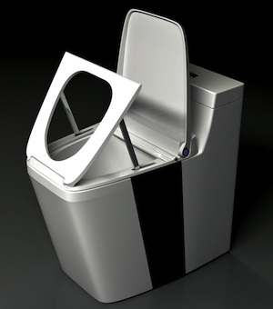
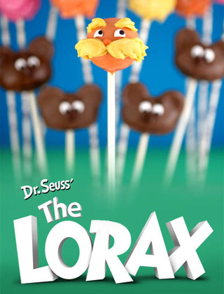

Mon, 26 Mar 2012 18:05:35 +0000
Un retrete que te ayuda a levantarte
Un retrete que te ayuda a levantarte
No pocas experiencias terribles se dan lugar en el cuarto de baño. Muchas de ellas tienen que ver con el propio cuerpo y su manía a negarse rotundamente a soltar amarras, que generan batallas contenidas, con las manos agarrando cualquier Continue reading.
No pocas experiencias terribles se dan lugar en el cuarto de baño. Muchas de ellas tienen que ver con el propio cuerpo y su manía a negarse rotundamente a soltar amarras, que generan batallas contenidas, con las manos agarrando cualquier cosa, los pies en el aire y un gruñido lapidario.
A esto hay que sumar las malas noticias que uno puede leer sentado en el inodoro, o las que le puedan llegar vía móvil o mediante la irrupción de tu madre en el cuarto para comunicarte la muerte de alguien que no conoces (en mi juventud esto ocurría con frecuencia y llegué a la conclusión de que cada vez que descomía un kebab alguien moría).
Ya sea por una razón o por la otra, a veces la conmoción trae consigo una debilidad que te impide levantarte. Pero el Stand-helping Closestool Toilet de Zhu Zhongyan y Zhou Jingwen está aquí para ayudarte. Equipado con un sistema hidráulico, el esfuerzo para flexionar las rodillas será menor, así que acabarás con el asunto mucho más rápido y recibirás ese necesario empujón que todos necesitamos de vez en cuando. Sólo espero que le versión final tenga también un sistema para darte palmadas en la espalda y felicitarte.

Visto en Yanko Design
Ver más: aseo, levantarse, retrete
Seguir @NoPuedoCreer - @QueLoVendan
Mon, 26 Mar 2012 11:23:05 +0000
Recetas de dulces Dr. Seuss
Recetas de dulces Dr. Seuss
Como aficionado a las historietas infantiles, los personajes de Dr. Seuss me parecen interesantísimos y estas originales recetas basadas en sus personajes me han encantado. Theodor Seuss Geisel fue un escritor, dibujante y caricaturista que se hizo famoso (hasta tiene Continue reading.
Como aficionado a las historietas infantiles, los personajes de Dr. Seuss me parecen interesantísimos y estas originales recetas basadas en sus personajes me han encantado.

Theodor Seuss Geisel fue un escritor, dibujante y caricaturista que se hizo famoso (hasta tiene dedicado un Doodle) por editar las historias de personajes como El Lorax, del que presentarán su película próximamente.
Visto en Bakerella.
Ver más: comics, dr.seuss, receta
Seguir @NoPuedoCreer - @QueLoVendan
Sun, 25 Mar 2012 13:55:34 +0000
Doug ya está aquí
Doug ya está aquí
Doug es el mal encarnado, recién salido del horno del infierno para perseguirnos hasta la extenuación. Fruto de la peor de las pesadillas, no ahorra esfuerzos cuando se trata de cosechar almas o atarse los cordones de las zapatillas. No Continue reading.
Doug es el mal encarnado, recién salido del horno del infierno para perseguirnos hasta la extenuación. Fruto de la peor de las pesadillas, no ahorra esfuerzos cuando se trata de cosechar almas o atarse los cordones de las zapatillas. No hay escapatoria posible, no hay salida; su mera visión puede ser fatal. Por eso es mejor verlo en una fotografía y estar sobre aviso. Aquí la tenéis.

Sí: es el de la derecha. Puede parecer una caja con ruedas o, como dice su creador, una maleta autónoma, pero alberga en su interior pensamientos terribles y cassettes de Marta Sánchez. Ben (el tipo de la izquierda) es el autoproclamado padre de la bestia, su contacto con la vida terrenal. Para disimular el aspecto de la bestia le ha colocado un sensor que detecta el sensor del propio Ben y lo persigue allá donde vaya. No niego que la ocurrencia pueda ser útil a la sociedad, pero sabiendo lo que oculta me parece algo enfermizo.
En el siguiente video podéis ver cómo estos inconscientes se las han ingeniado para invocar a la criatura.
Visto en Gizmodiva
Ver más: equipaje, robots
Seguir @NoPuedoCreer - @QueLoVendan
Fri, 23 Mar 2012 15:17:58 +0000
Crean algoritmo para encontrar a Wally
Crean algoritmo para encontrar a Wally
Stack Overflow es una página donde se reúnen muchos programadores y se cosen a preguntas, se proponen desafíos y los solucionan entre todos a modo de cónclave de eruditos. Es como Yahoo! Answers pero con menos probabilidades de que la Continue reading.

Stack Overflow es una página donde se reúnen muchos programadores y se cosen a preguntas, se proponen desafíos y los solucionan entre todos a modo de cónclave de eruditos. Es como Yahoo! Answers pero con menos probabilidades de que la respuesta sea una enfermedad mortal. La iniciativa es hermosa, claro, y muy útil, pero los resultados lo son todavía más: su última hazaña ha sido dar con el algoritmo para encontrar a Wally. Vamos, que han reventado el juego.
Los interesados podéis ver el proceso aquí; el tal Heike es el que se ha colgado las medallas usando un programa llamado Mathematica.
El método todavía no está depurado y precisa de unos retoques (a veces da falsos positivos), así que ese margen podría darle a Wally la ventaja que necesita para llegar hasta Heike y tener unas palabras con él.
Visto en Tecca
Ver más: matemáticas, noticias, programación, wally
Seguir @NoPuedoCreer - @QueLoVendan
Thu, 22 Mar 2012 17:00:26 +0000
Tatuajes que vibran cuando suena el móvil
Tatuajes que vibran cuando suena el móvil
Nokia quiere patentar unos tatuajes que vibran con cada llamada telefónica. Sí. Combinar esos tatuajes con alguna promoción de llamadas gratuitas con amigos puede ser una experiencia maravillosa que nunca quiero tener. Se acabaron las excusas, los "es que lo Continue reading.
 Nokia quiere patentar unos tatuajes que vibran con cada llamada telefónica. Sí. Combinar esos tatuajes con alguna promoción de llamadas gratuitas con amigos puede ser una experiencia maravillosa que nunca quiero tener. Se acabaron las excusas, los "es que lo tenía en silencio", "es que no lo he escuchado", "no te lo he cogido porque estaba dando a luz",... nada, nada: si te llaman y no sientes la llamada es que estás muerto.
Nokia quiere patentar unos tatuajes que vibran con cada llamada telefónica. Sí. Combinar esos tatuajes con alguna promoción de llamadas gratuitas con amigos puede ser una experiencia maravillosa que nunca quiero tener. Se acabaron las excusas, los "es que lo tenía en silencio", "es que no lo he escuchado", "no te lo he cogido porque estaba dando a luz",... nada, nada: si te llaman y no sientes la llamada es que estás muerto.
A grandes rasgos, la patente se basa en incluir elementos magnéticos en la piel que detecten las ondas magnéticas que emita el teléfono y reaccionen ante ellas.
Supongo que los tatuajes serán personalizados y variarán según quién llame; así, "amor de madre" vibrará cuando llame la susodicha y "Jesús te ama" cuando se te vaya a aparecer un santo en un descampado. Los que se hayan tatuado el archiconocido "insert coin" en la cola también serán avisados cuando llegue el momento de jugar. Es cuestión de pasarle la agenda al tatuador y que se ponga manos a la obra.
Yo veo la mano de las agencias de espionaje detrás de esto; debe de ser algún plan para acabar con los Yakuza provocándoles ataques epilépticos a base de llamadas perdidas. Seguro, vamos.
Visto en Business Insider gracias a ALMAX (el lector, no el medicamento)
Ver más: móviles, noticias, tatuajes, vibrar
Seguir @NoPuedoCreer - @QueLoVendan